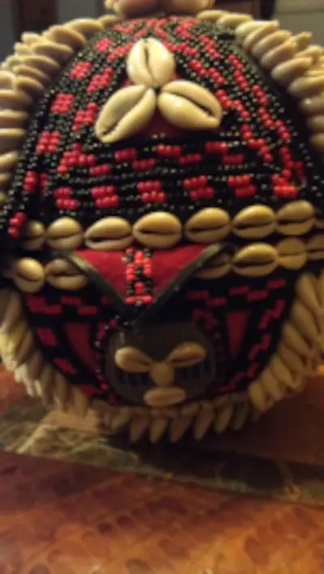
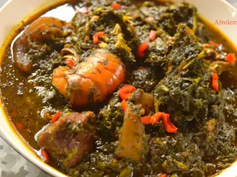

Join us for a meet and greet Wednesday night at 7:00 P.M.
Hero
Current Events
How Nigeria's New Women Affairs Minister Hopes to Achieve Empowerment, Gender Violence Goals
The minister's presentation of the communique at the end of the 23rd National Council on Women Affairs in Calabar, on 22 August, was the first opportunity to voice over her vision.
Weather Information
Weather forecast for the next 3 days
Calabar Crafts
Calabar Crafts is a local business that specializes in handmade crafts using locally sourced materials. Their unique designs reflect the rich cultural heritage of Calabar.
Taste of Calabar
Taste of Calabar is a popular restaurant that offers a variety of local dishes. Their commitment to authentic flavors and high-quality ingredients has made them a favorite among locals and tourists alike.
Calabar Eco Tours
Calabar Eco Tours provides guided tours to some of the most beautiful and ecologically diverse spots in and around Calabar. They are committed to sustainable tourism and educating visitors about the local ecosystem.